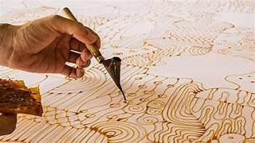
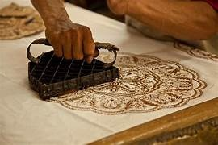
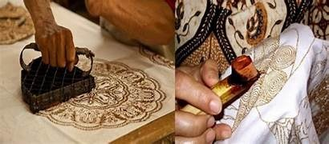

Teknik Pembuatan Batik

Batik Tulis
Teknik tradisional menggunakan canting untuk menggambar pola dengan lilin panas secara manual. Proses ini membutuhkan ketelitian tinggi dan waktu yang lama.

Batik Cap
Menggunakan cap (stempel) tembaga yang telah dibentuk dengan motif tertentu. Teknik ini lebih efisien untuk produksi massal.

Batik Printing
Teknik modern dengan mencetak motif batik menggunakan mesin. Hasilnya lebih seragam namun kurang memiliki nilai seni batik tradisional.

Batik Kombinasi
Gabungan antara batik tulis dan batik cap, biasanya dengan batik tulis untuk detail halus dan batik cap untuk bagian dasar.